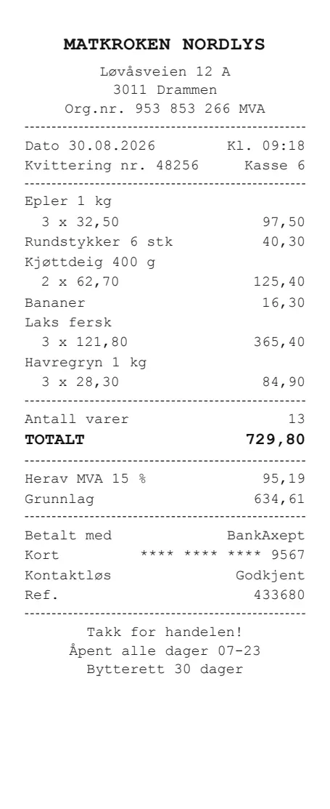
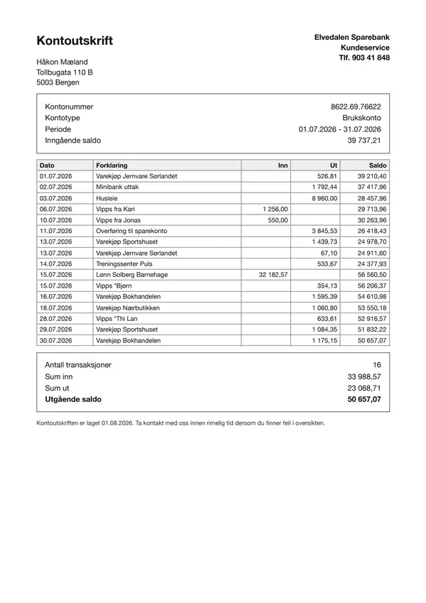
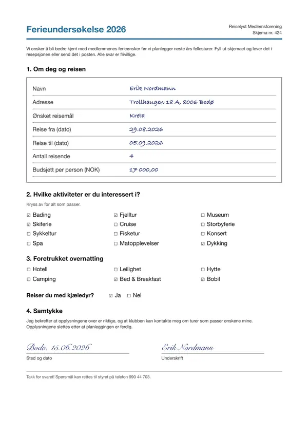
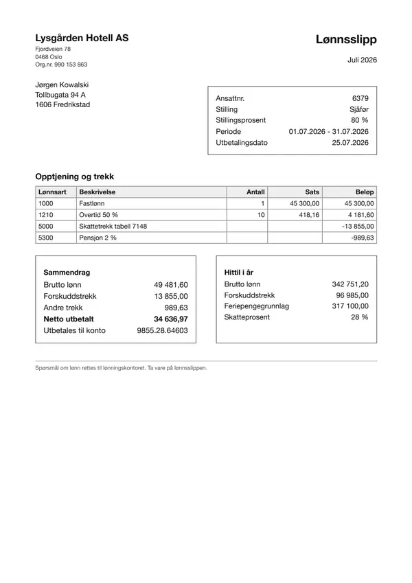
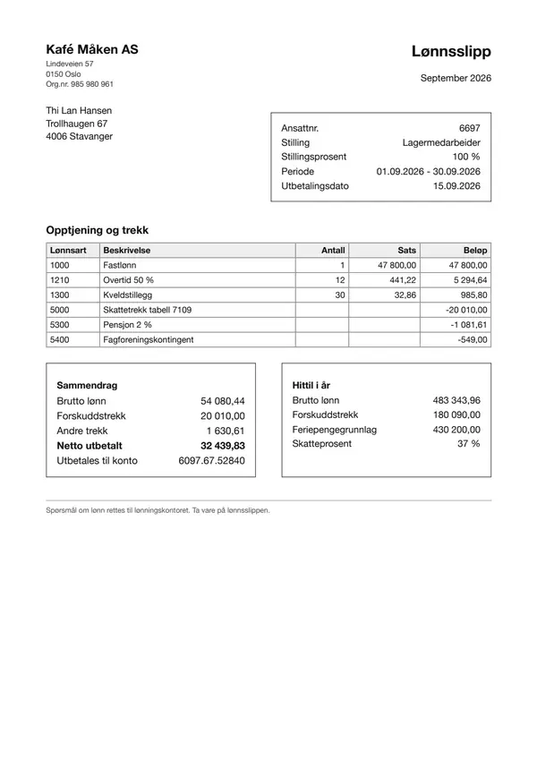
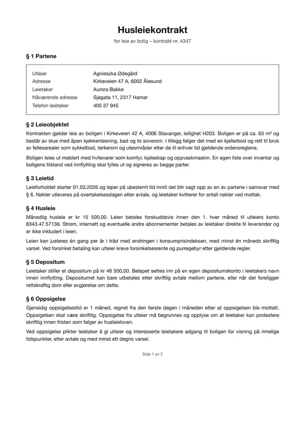

2026-10-14-variation-claude55
Run-to-run variation of Claude Sonnet 5.5 and Haiku 5.5 (the gateway accepts only temperature 1): every page and document 3 times with identical settings, one request at a time.
One experiment. New here? The main page explains what the benchmark does, what the pipelines and metrics mean, and the document types.
Key facts (computed, not LLM-written)
| question | clean pages | degraded pages |
|---|---|---|
| most accurate pipeline | page images → Claude Haiku 5.5 (image->haiku-5.5): 100.0% | page images → Claude Sonnet 5.5 (image->sonnet-5.5): 99.7% |
| cheapest pipeline (among priced, see note) | – | – |
| fastest pipeline | page images → Claude Haiku 5.5 (image->haiku-5.5): 1.5 s/doc | page images → Claude Sonnet 5.5 (image->sonnet-5.5): 1.3 s/doc |
Cost note: no cost could be computed for image->haiku-5.5, image->sonnet-5.5 (no price configured, or no successful request reported its token usage), so they are left out of the cheapest-pipeline comparison. Set price_per_mtok for those backends to include them.
Every pipeline (field accuracy, time per document, cost per 1,000 documents):
| pipeline | clean accuracy | degraded accuracy | s/doc (clean) | $/1k docs (clean) |
|---|---|---|---|---|
page images → Claude Haiku 5.5 (image->haiku-5.5) | 100.0% | 97.9% | 1.5 | – |
page images → Claude Sonnet 5.5 (image->sonnet-5.5) | 100.0% | 99.7% | 1.5 | – |
| reader | variant | CER median | number recall | invented numbers (excl. runaway) | runaway pages | pages at token limit |
|---|---|---|---|---|---|---|
haiku-5.5 | clean | 0.000 | 100.0% | 0 | 0 | 0 |
haiku-5.5 | degraded | 0.001 | 94.8% | 11 | 0 | 2 |
sonnet-5.5 | clean | 0.000 | 100.0% | 0 | 0 | 0 |
sonnet-5.5 | degraded | 0.000 | 99.3% | 3 | 0 | 0 |
| reader | p50 s/page (one at a time) | max pages/min (at concurrency) |
|---|---|---|
sonnet-5.5 | 4.4 | 13 (1) |
haiku-5.5 | 4.0 | 13 (1) |
Fields missed most often (count over clean + degraded documents):
- page images → Claude Haiku 5.5 (
image->haiku-5.5):newsletter.new_fee(3),receipt.date(1),receipt.merchant(1),rental_contract.monthly_rent(1) - page images → Claude Sonnet 5.5 (
image->sonnet-5.5):rental_contract.monthly_rent(1)
Run-to-run variation (identical repeats; range = best minus worst repeat):
| pipeline | variant | repeats | field accuracy (mean of repeats) | min–max | range | answers that changed |
|---|---|---|---|---|---|---|
page images → Claude Haiku 5.5 (image->haiku-5.5) | clean | 3 | 100.0% | 100.0%–100.0% | 0.0 pts | 0.0% |
page images → Claude Haiku 5.5 (image->haiku-5.5) | degraded | 3 | 98.2% | 97.9%–98.5% | 0.6 pts | 1.8% |
page images → Claude Sonnet 5.5 (image->sonnet-5.5) | clean | 3 | 100.0% | 100.0%–100.0% | 0.0 pts | 0.0% |
page images → Claude Sonnet 5.5 (image->sonnet-5.5) | degraded | 3 | 99.6% | 99.4%–99.7% | 0.3 pts | 0.3% |
| reader | variant | repeats | CER mean (mean of repeats) | min–max | range | number recall min–max | pages not identical |
|---|---|---|---|---|---|---|---|
haiku-5.5 | clean | 3 | 0.014 | 0.014–0.015 | 0.002 | 100.0%–100.0% | 31.5% |
haiku-5.5 | degraded | 3 | 0.033 | 0.016–0.052 | 0.036 | 94.8%–98.6% | 77.8% |
sonnet-5.5 | clean | 3 | 0.021 | 0.018–0.023 | 0.005 | 100.0%–100.0% | 25.9% |
sonnet-5.5 | degraded | 3 | 0.021 | 0.020–0.023 | 0.002 | 99.2%–99.3% | 44.4% |
Differences against the run-to-run range: a gap between two means larger than the larger of their two ranges is outside it (the repeats don't explain it); otherwise it is within it, and not evidence that one is better.
| variant | compared | metric | gap | larger range | verdict |
|---|---|---|---|---|---|
| clean | page images → Claude Haiku 5.5 (image->haiku-5.5) vs page images → Claude Sonnet 5.5 (image->sonnet-5.5) | field accuracy | 0.0 pts | 0.0 pts | within the run-to-run range |
| degraded | page images → Claude Haiku 5.5 (image->haiku-5.5) vs page images → Claude Sonnet 5.5 (image->sonnet-5.5) | field accuracy | 1.4 pts | 0.6 pts | outside the run-to-run range |
| clean | haiku-5.5 vs sonnet-5.5 | CER mean | 0.006 | 0.005 | outside the run-to-run range |
| degraded | haiku-5.5 vs sonnet-5.5 | CER mean | 0.011 | 0.036 | within the run-to-run range |
Recommendation
LLM comment by opus-5.5 (anthropic.claude-opus-5-5) on the computed key facts. Check the numbers against the tables below.
Bottom line
Choose image->sonnet-5.5. Both pipelines score 100.0% on clean pages, but on degraded (phone-photo) pages image->sonnet-5.5 reaches 99.7% against 97.9% for image->haiku-5.5. That gap is outside the run-to-run range, so repeat noise does not explain it.
What the facts say
- Clean pages do not separate the models. Both pipelines score 100.0% with a 0.0 pts range across repeats. The difference only shows up on degraded input.
- The reading quality explains the degraded gap. Reading degraded pages,
haiku-5.5has lower number recall (94.8% vs 99.3%) and more invented numbers (11 vs 3). It also hit the token limit on 2 pages, whilesonnet-5.5hit it on 0. Its degraded transcripts are also less stable: CER mean ranges 0.016–0.052, and 77.8% of pages were not identical across repeats. - Missed fields cluster in
image->haiku-5.5. Its misses arenewsletter.new_fee(3),receipt.date,receipt.merchantandrental_contract.monthly_rent(1 each).image->sonnet-5.5missed onlyrental_contract.monthly_rent(1). Money and date fields are where errors land. - No runaway pages. Both readers show 0 runaway pages on clean and degraded input, so degenerate output loops are not a concern here.
- Self-hosted models: no evidence. The key facts contain no self-hosted pipeline, so this benchmark cannot show where self-hosting helps or hurts.
Choice by goal
| goal | choice | why |
|---|---|---|
| highest accuracy | image->sonnet-5.5 | Most accurate on degraded pages (99.7%), with the gap outside run-to-run noise. It ties image->haiku-5.5 on clean pages. |
| lowest latency | image->haiku-5.5 on clean pages; image->sonnet-5.5 on degraded pages | These are the fastest pipelines per the key facts (1.5 s/doc clean, 1.3 s/doc degraded). On clean pages both pipelines run at 1.5 s/doc, so latency does not justify giving up accuracy. |
| lowest cost | Unknown | No price is configured for image->haiku-5.5 or image->sonnet-5.5, so neither can be called cheapest. Set price_per_mtok to compare them. |
| checking / second opinion | image->haiku-5.5 as cross-check | Use it as an independent second read. Where it disagrees with image->sonnet-5.5, flag the field for review, especially money and date fields. |
| self-hosting | Not supported by these facts | No self-hosted pipeline appears in the key facts. Benchmark one before deciding. |
Caveats
- Synthetic data. The test set is 48 synthetic Norwegian documents. Real scans, handwriting or other languages may behave differently.
- Simulated degradation. Degraded pages are simulated phone photos. Real capture problems such as glare, folds or skew may hurt the models more.
- Small differences are fragile. With so few misses, a single document can shift a percentage. The clean-page tie is within noise.
- Missing pipelines and prices. Only image-based pipelines are in the key facts. Without prices, the cost trade-off is unresolved.
Setup
Models
| role | name in tables | model | model id | served by | temperature | price |
|---|---|---|---|---|---|---|
| transcriber, extractor | sonnet-5.5 | Claude Sonnet 5.5 | anthropic.claude-sonnet-5-5 | OpenAI-compatible gateway | 1 | – |
| transcriber, extractor | haiku-5.5 | Claude Haiku 5.5 | anthropic.claude-haiku-5-5 | OpenAI-compatible gateway | 1 | – |
| extraction agent (default) | sonnet-4.5 | Claude Sonnet 4.5 (2025-09-29) | anthropic.claude-sonnet-4-5-20250929-v1:0 | OpenAI-compatible gateway | 0 | $3.0 in / $15.0 out per 1M tokens |
| recommendation writer | opus-5.5 | Claude Opus 5.5 | anthropic.claude-opus-5-5 | OpenAI-compatible gateway | 1 | – |
The extraction agent
The agent (default extractor) is Claude Sonnet 4.5 (2025-09-29) (anthropic.claude-sonnet-4-5-20250929-v1:0), temperature 0. It gets the document type's field list (name, type, one-line description), plus either the page images (image->agent) or the text transcript of every page, in order (<transcriber>->agent), and returns one JSON object with the field values copied verbatim; max 2,048 output tokens. It never sees the ground truth. Pipelines that name another extractor (sonnet-5.5, haiku-5.5) use that model with the same input.
Models with temperature above 0 sample their output, so their results vary slightly between runs; differences of a point or two are within noise.
GPU
No self-hosted model in this run, so no GPU was used.
Run
| plan | variation-claude55: Run-to-run variation of Claude Sonnet 5.5 and Haiku 5.5 (the gateway accepts only temperature 1): every page and document 3 times with identical settings, one request at a time. (2 transcription runs) |
| documents | 48 documents, 54 pages, 108 page images (clean + degraded), seed 7 |
| runner | fargate (2048 CPU units / 4096 MB) |
| code | git 2deb4c3 |
| started | 2026-10-14T22:58:03 |
| extraction | every document extracted 3 times per pipeline (run-to-run check) |
Transcription runs in this plan:
sonnet-5.5at concurrency 1 (repeat 3)haiku-5.5at concurrency 1 (repeat 3)
Results
Speed and cost (stage 1)
| Backend | Model | Conc. | Pages | OK | Errors | Wall (s) | Pages/min | p50 (s) | p95 (s) | max (s) | Prompt tok | Compl. tok | Retries | $/1k pages |
|---|---|---|---|---|---|---|---|---|---|---|---|---|---|---|
| sonnet-5.5 | anthropic.claude-sonnet-5-5 | 1 | 324 | 324 | 0 | 1491.17 | 13.0 | 4.45 | 6.64 | 10.36 | 1 891 | 750 | 0 | – |
| haiku-5.5 | anthropic.claude-haiku-5-5 | 1 | 324 | 324 | 0 | 1489.20 | 13.1 | 3.99 | 7.94 | 33.23 | 1 892 | 1 178 | 0 | – |
Highlighted: best value per column within each concurrency level. Click a header to sort.
Transcription quality (stage 1)
| Backend | Variant | Pages | Coverage | CER mean | CER median | Runaway | Token limit | WER | Word recall | Word precision | Number recall | Numbers missing | Invented numbers |
|---|---|---|---|---|---|---|---|---|---|---|---|---|---|
| haiku-5.5 | clean | 54 | 100.0% | 0.015 | 0.000 | 0 | 0 | 0.016 | 100.0% | 99.7% | 100.0% | 0 | 0 |
| haiku-5.5 | degraded | 54 | 100.0% | 0.052 | 0.001 | 0 | 2 | 0.060 | 95.7% | 95.2% | 94.8% | 133 | 11 |
| sonnet-5.5 | clean | 54 | 100.0% | 0.021 | 0.000 | 0 | 0 | 0.025 | 100.0% | 99.8% | 100.0% | 0 | 0 |
| sonnet-5.5 | degraded | 54 | 100.0% | 0.021 | 0.000 | 0 | 0 | 0.025 | 99.7% | 99.5% | 99.3% | 4 | 3 |
Highlighted: best value per column within each variant. Click a header to sort.
Field extraction (stage 2)
| Input → extractor | Pipeline id | Variant | Docs | Coverage | Field accuracy | Correct | Total | Extractor latency (s) | End-to-end (s) | $/1k docs |
|---|---|---|---|---|---|---|---|---|---|---|
| page images → Claude Haiku 5.5 | image->haiku-5.5 | clean | 48 | 100.0% | 100.0% | 329 | 329 | 1.46 | 1.46 | – |
| page images → Claude Haiku 5.5 | image->haiku-5.5 | degraded | 48 | 100.0% | 97.9% | 322 | 329 | 1.76 | 1.76 | – |
| page images → Claude Sonnet 5.5 | image->sonnet-5.5 | clean | 48 | 100.0% | 100.0% | 329 | 329 | 1.54 | 1.54 | – |
| page images → Claude Sonnet 5.5 | image->sonnet-5.5 | degraded | 48 | 100.0% | 99.7% | 328 | 329 | 1.30 | 1.30 | – |
Highlighted: best value per column within each variant. Click a header to sort.
Run-to-run variation
The same pages and documents were sent several times with identical settings, and each repeat is scored on its own. Some models accept only temperature 1 (no deterministic setting), so they sample and their answers change from run to run; this measures how much, so a difference between two models can be told apart from noise. A range is the worst to the best repeat; a gap between two models smaller than the larger of their two ranges is within the run-to-run range and not evidence that one is better. Repeats are measured at one concurrency (the lowest that has them, 1 in the example plan): sampling noise doesn't depend on how many requests run at once, so higher levels would only add cost. A transcript-based pipeline re-reads the same transcript in every repeat, so its range is the extractor's alone; an image-based pipeline's is the whole pipeline's. The main tables above score one repeat (the last).
Run-to-run check, identical settings each time: every page transcribed 3 times at concurrency 1 by haiku-5.5, sonnet-5.5; every document extracted 3 times by image->haiku-5.5, image->sonnet-5.5 (a transcript-based pipeline re-reads the same transcript, so its repeats measure the extractor). The spread between repeats is sampling noise; the key facts give each range.
Field extraction, over the repeats
| Input → extractor | Pipeline id | Variant | Repeats | Docs | Field accuracy: mean of repeats | Field accuracy: min | Field accuracy: max | Field accuracy: std | Answers | Answers changed | Right/wrong flips |
|---|---|---|---|---|---|---|---|---|---|---|---|
| page images → Claude Haiku 5.5 | image->haiku-5.5 | clean | 3 | 48 | 100.0% | 100.0% | 100.0% | 0.0% | 329 | 0.0% | 0.0% |
| page images → Claude Haiku 5.5 | image->haiku-5.5 | degraded | 3 | 48 | 98.2% | 97.9% | 98.5% | 0.3% | 329 | 1.8% | 1.8% |
| page images → Claude Sonnet 5.5 | image->sonnet-5.5 | clean | 3 | 48 | 100.0% | 100.0% | 100.0% | 0.0% | 329 | 0.0% | 0.0% |
| page images → Claude Sonnet 5.5 | image->sonnet-5.5 | degraded | 3 | 48 | 99.6% | 99.4% | 99.7% | 0.2% | 329 | 0.3% | 0.3% |
Highlighted: best value per column within each variant. Click a header to sort.
Transcription, over the repeats
| Backend | Variant | Conc. | Repeats | Pages | CER mean: mean of repeats | CER mean: min | CER mean: max | CER mean: std | CER median: mean of repeats | CER median: min | CER median: max | Word recall: min | Word recall: max | Number recall: mean of repeats | Number recall: min | Number recall: max | Number recall: std | Pages not identical | Per-page CER range |
|---|---|---|---|---|---|---|---|---|---|---|---|---|---|---|---|---|---|---|---|
| haiku-5.5 | clean | 1 | 3 | 54 | 0.014 | 0.014 | 0.015 | 0.001 | 0.000 | 0.000 | 0.000 | 100.0% | 100.0% | 100.0% | 100.0% | 100.0% | 0.0% | 31.5% | 0.008 |
| haiku-5.5 | degraded | 1 | 3 | 54 | 0.033 | 0.016 | 0.052 | 0.018 | 0.001 | 0.001 | 0.001 | 95.7% | 99.6% | 97.1% | 94.8% | 98.6% | 2.1% | 77.8% | 0.064 |
| sonnet-5.5 | clean | 1 | 3 | 54 | 0.021 | 0.018 | 0.023 | 0.003 | 0.000 | 0.000 | 0.000 | 100.0% | 100.0% | 100.0% | 100.0% | 100.0% | 0.0% | 25.9% | 0.011 |
| sonnet-5.5 | degraded | 1 | 3 | 54 | 0.021 | 0.020 | 0.023 | 0.001 | 0.000 | 0.000 | 0.001 | 99.5% | 99.7% | 99.3% | 99.2% | 99.3% | 0.1% | 44.4% | 0.011 |
Highlighted: best value per column within each variant. Click a header to sort.
Field extraction, per repeat
| Pipeline id | Variant | Repeat | Docs | Coverage | Field accuracy | Correct | Total | Extractor latency (s) |
|---|---|---|---|---|---|---|---|---|
| image->haiku-5.5 | clean | 0 | 48 | 100.0% | 100.0% | 329 | 329 | 1.50 |
| image->haiku-5.5 | clean | 1 | 48 | 100.0% | 100.0% | 329 | 329 | 1.52 |
| image->haiku-5.5 | clean | 2 | 48 | 100.0% | 100.0% | 329 | 329 | 1.46 |
| image->haiku-5.5 | degraded | 0 | 48 | 100.0% | 98.2% | 323 | 329 | 1.68 |
| image->haiku-5.5 | degraded | 1 | 48 | 100.0% | 98.5% | 324 | 329 | 1.61 |
| image->haiku-5.5 | degraded | 2 | 48 | 100.0% | 97.9% | 322 | 329 | 1.76 |
| image->sonnet-5.5 | clean | 0 | 48 | 100.0% | 100.0% | 329 | 329 | 1.65 |
| image->sonnet-5.5 | clean | 1 | 48 | 100.0% | 100.0% | 329 | 329 | 1.60 |
| image->sonnet-5.5 | clean | 2 | 48 | 100.0% | 100.0% | 329 | 329 | 1.54 |
| image->sonnet-5.5 | degraded | 0 | 48 | 100.0% | 99.4% | 327 | 329 | 1.37 |
| image->sonnet-5.5 | degraded | 1 | 48 | 100.0% | 99.7% | 328 | 329 | 1.34 |
| image->sonnet-5.5 | degraded | 2 | 48 | 100.0% | 99.7% | 328 | 329 | 1.30 |
Highlighted: best value per column within each model or pipeline and variant. Click a header to sort.
Transcription, per repeat
| Backend | Variant | Repeat | Pages | Coverage | CER mean | CER median | Word recall | Number recall | Token limit |
|---|---|---|---|---|---|---|---|---|---|
| haiku-5.5 | clean | 0 | 54 | 100.0% | 0.014 | 0.000 | 100.0% | 100.0% | 0 |
| haiku-5.5 | clean | 1 | 54 | 100.0% | 0.014 | 0.000 | 100.0% | 100.0% | 0 |
| haiku-5.5 | clean | 2 | 54 | 100.0% | 0.015 | 0.000 | 100.0% | 100.0% | 0 |
| haiku-5.5 | degraded | 0 | 54 | 100.0% | 0.030 | 0.001 | 99.6% | 98.1% | 0 |
| haiku-5.5 | degraded | 1 | 54 | 100.0% | 0.016 | 0.001 | 99.5% | 98.6% | 0 |
| haiku-5.5 | degraded | 2 | 54 | 100.0% | 0.052 | 0.001 | 95.7% | 94.8% | 2 |
| sonnet-5.5 | clean | 0 | 54 | 100.0% | 0.018 | 0.000 | 100.0% | 100.0% | 0 |
| sonnet-5.5 | clean | 1 | 54 | 100.0% | 0.023 | 0.000 | 100.0% | 100.0% | 0 |
| sonnet-5.5 | clean | 2 | 54 | 100.0% | 0.021 | 0.000 | 100.0% | 100.0% | 0 |
| sonnet-5.5 | degraded | 0 | 54 | 100.0% | 0.023 | 0.001 | 99.6% | 99.3% | 0 |
| sonnet-5.5 | degraded | 1 | 54 | 100.0% | 0.020 | 0.000 | 99.5% | 99.2% | 0 |
| sonnet-5.5 | degraded | 2 | 54 | 100.0% | 0.021 | 0.000 | 99.7% | 99.3% | 0 |
Highlighted: best value per column within each model or pipeline and variant. Click a header to sort.
- run-to-run range: worst to best result over identical repeats (min–max of the per-repeat means); a gap between two pipelines or readers smaller than the larger of their two ranges is within the run-to-run range
- std: sample standard deviation (n-1) of the per-repeat means
- pages not identical: share of pages whose normalised transcript (as scored) is not the same in every repeat; a failed request counts as a different answer
- per-page CER range: for each page, its highest minus its lowest CER over the repeats; averaged
- answers changed: share of (document, field) answers whose normalised value is not the same in every repeat (a failed extraction or an omitted field is no value)
- right/wrong flips: share of (document, field) answers right in some repeats and wrong in others
Documents (48)
















